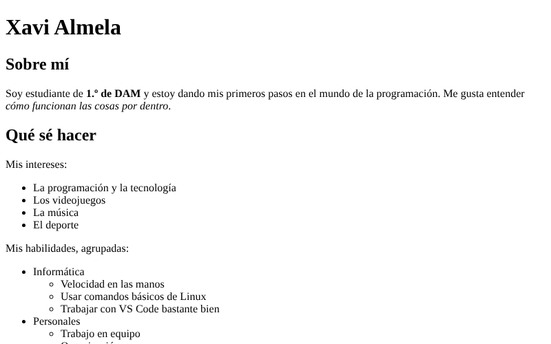
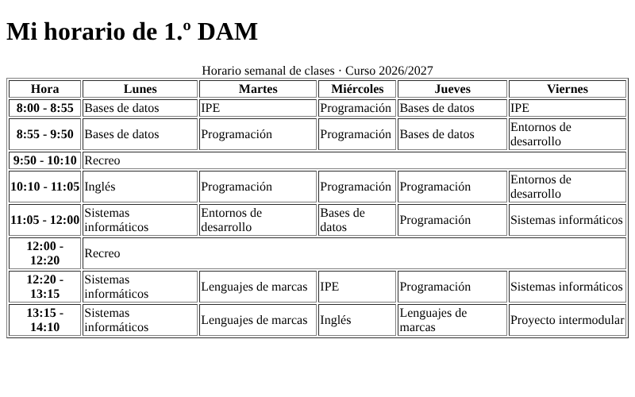
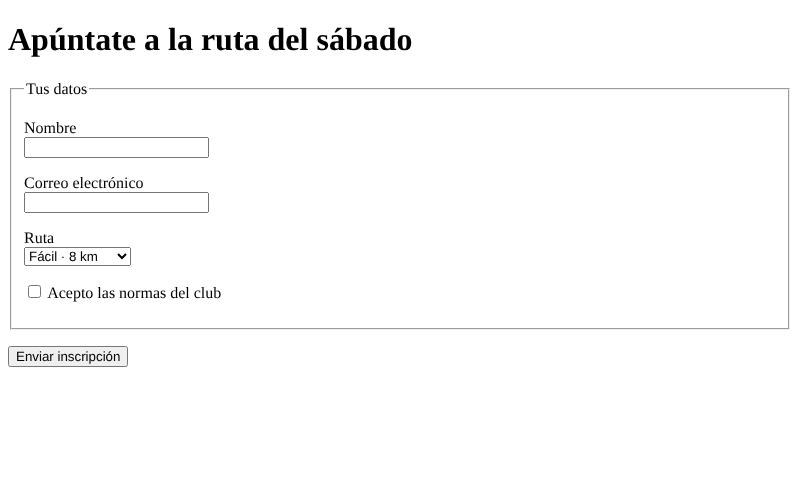
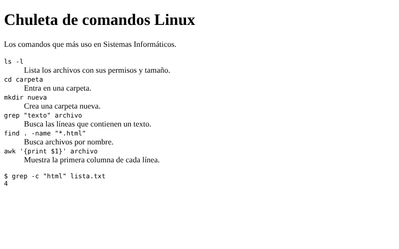
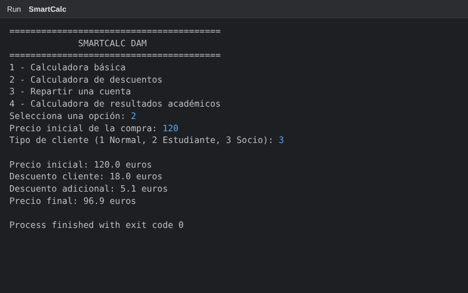
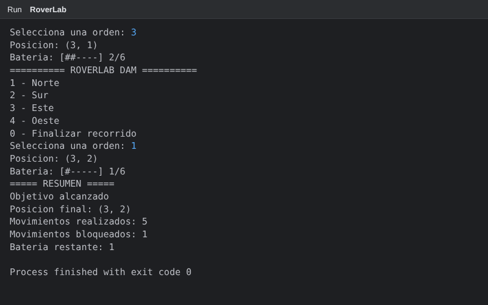

Actividad 5 · Mi primer portfolio

Estos son los trabajos que he hecho durante el primer trimestre: páginas web de Lenguajes de marcas y programas en Java de Programación.


caption y a unir celdas con colspan.

fieldset, a asociar cada label con su campo y a usar distintos tipos de input.

code y pre, y repasé los comandos de Sistemas Informáticos.

Scanner, a elegir opciones con switch y a combinar condiciones con && y ||, como el descuento extra que solo se aplica si la compra pasa de 100 euros y el cliente es estudiante o socio.

while, a repetir un menú con do-while y a dibujar una barra de batería con for. Lo más difícil fue que un movimiento bloqueado no gastara batería.